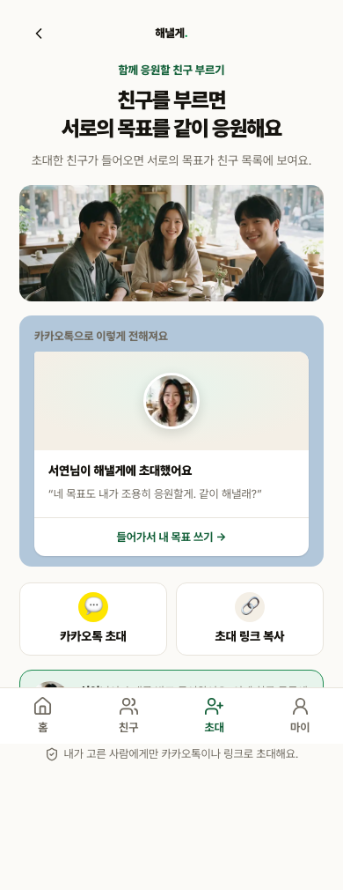
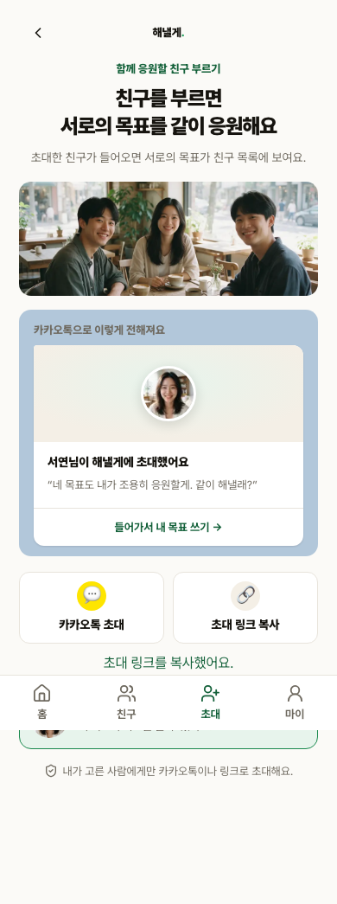
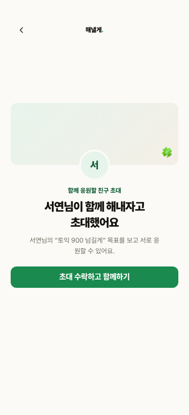
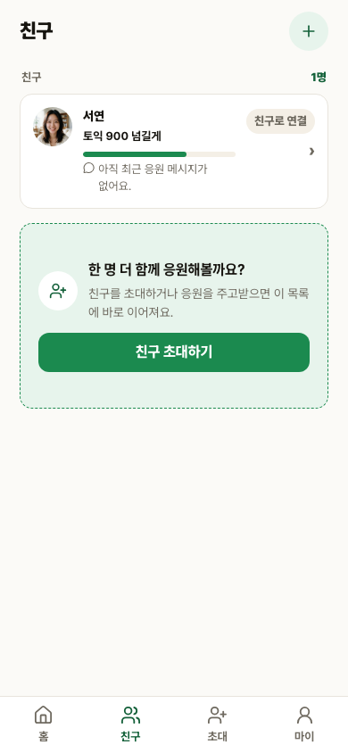
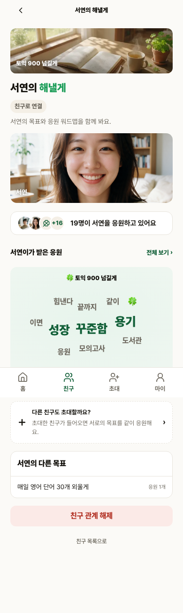

S3 친구 초대부터 친구 목표 조회까지
무료 staging의 실제 UI, Supabase Auth/API/DB/Storage를 사용한 한 회차입니다. 초대 생성부터 다른 계정 수락, 친구 목록, 친구 공개 목표 조회까지 이어졌고 보안 거부·동시성·정리도 같은 최신 E2E 소스에서 검증했습니다.
독립 QA PASS · S3 internal closed
7 / 7F5 명시 검증, 실패 0 · skip 0
17 / 17전체 Chromium 한 회차, 실패 0 · skip 0
3 / 3독립 01A·01B·01C, 실패 0 · skip 0
ACTIVE초대 수락 뒤 DB 친구 연결 상태
0최종 namespace DB/Auth/Storage 잔여
실제 5단계 흐름

1. 초대 생성owner가 실제 초대 UI를 엽니다.
2. 초대 링크 생성서버가 만든 실제 token 링크를 확인합니다.
3. 다른 계정 수락별도 계정이 링크를 방문해 수락합니다.
4. 친구 목록DB 연결 상태 ACTIVE와 UI 목록을 함께 확인합니다.
5. 친구 공개 목표인증 HTTP 사전 요청 없이 실제 Link 클릭으로 공개 목표를 조회합니다.보안·동시성·정리
- 잘못된 friend owner, PRIVATE 목표, REMOVED 연결은 각각 실제 HTTP 404입니다.
- 비인증 wordmap은 최초 HTTP 307, 정확한
/?next=…, landing HTTP 200, 금지 DOM 0입니다. - 동일 token 동시 수락은 성공 1, used 1, connection 1입니다.
- 지연 Storage cleanup 객체는 정리 전 PENDING·객체 존재를 확인한 뒤 exact queue/asset/object를 제거했고, 최종 집계는 모두 0입니다.
- staging 결제 플래그는 테스트 뒤 false로 복구했고
payments_disabledHTTP 503을 확인했습니다. Toss 호출·실결제는 없었습니다.
소스와 원문 증거
제품 web/src는 S2 최종 staging과 동일합니다. 따라서 S2 최종 소스의 78파일·439/439 회귀를 재사용했고 unit 전량을 중복 실행하지 않았습니다. S3는 독립 QA PASS로 내부 closed입니다. 실제 Kakao OAuth·Toss sandbox callback·실결제·production 배포와 전체 제품 QA 승인은 미검증입니다.